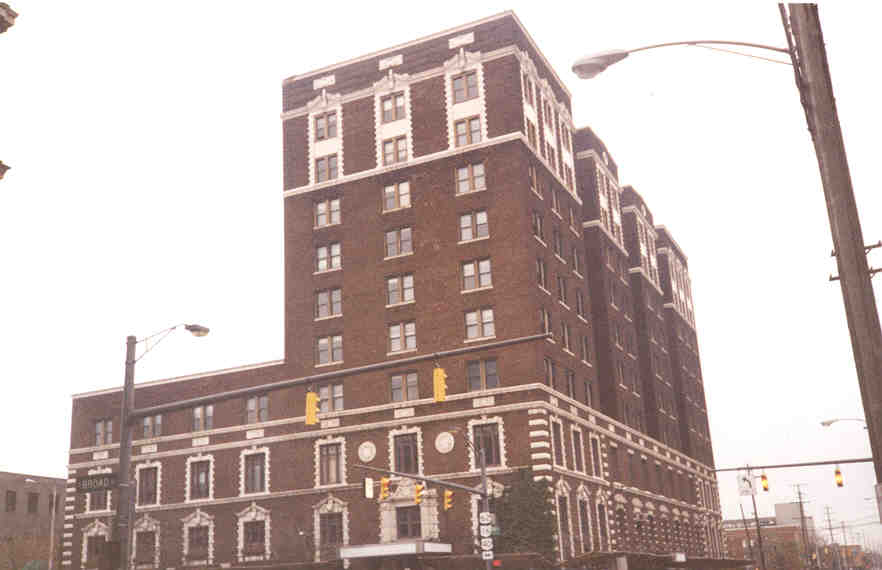
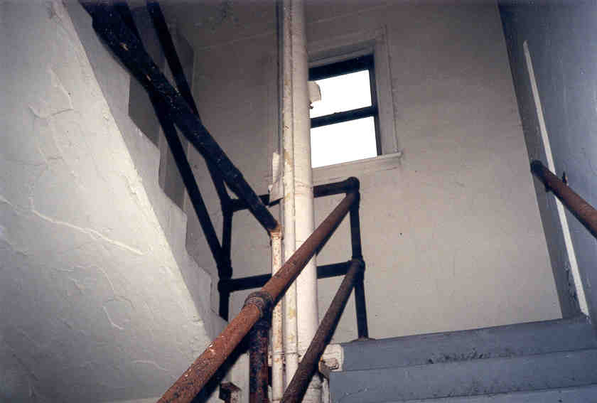
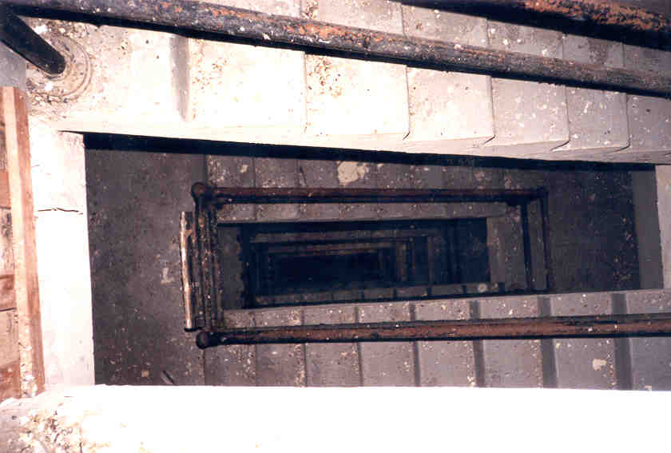

The Seneca Hotel

The Seneca is a landmark building which, strangely for downtown Columbus, now stands empty. It's located on the southeast corner of Broad and Grant streets, and at ten full stories, it's a minor part of the Columbus skyline. If you live in Columbus you've probably seen it.


At one time this was a luxury hotel, featuring single-occupancies, suites of rooms, offices, and banquet facilities. It was built in 1917, designed by noted Columbus architect Frank Packard. My dad remembers when the Seneca was a contender for best place to stay in town. Decades ago, the OSU Faculty Club was located here. Later on it was turned into offices for the Ohio EPA, then abandoned in the early 90s.
Today only the homeless people occupy the place. In fact, when Rookie and I went in the first time we were scared away by an encounter with a gentleman smoking crack on the third floor. Later we returned for a more thorough exploration and managed to avoid human contact the entire time.
There are, in fact, people living in the Seneca Hotel. This might make you want to stay away. However, I've been inside three times and have never been bothered by the current occupants. On my third visit, Hoss and I got brave and decided to look for the people. On the eighth floor the suite of rooms at the south end of the building was locked from the inside; Hoss, who can squat most compact cars, kicked the door open, and we explored an area obviously being lived in by someone. There were blanket piles and assorted junk everywhere, and the envigorating smell of urine filled the air. We figured that the homeless people were hiding in the closets and left them alone.
More conclusively, when Hoss and I went to the third floor and started toward the back, we opened the door on a man rolled up in a sleeping bag on the floor. He said, "Who's there?" We said, "Nobody, go back to sleep," and closed the door. No one tried to kill us or anything, but it's still most definitely NOT advisable to go by yourself.
I was informed by a guy whose dad worked at the Seneca when the EPA was here that the basement might be haunted. It seems his dad and his coworkers heard the sounds of a child crying in the basement filing rooms on more than one occasion. I don't know if any children ever died in the Seneca, but maybe it is haunted. I wandered around in the basement along and with Rookie and Hoss, and never encountered any ghosts. Too bad. Now I want to go back.


The way into the Seneca (at least until they seal it off) is through a hole in the wall in the recessed loading dock area from the alley around back. Go up the metal stairs, into the loading dock area, and go through the door to the right, and you'll see it. A flashlight is an absolute must.
Since the place is so big I've split this section up. Choose a part of the building you'd like to see.
The Lobby
Upper Floors
The Roof
The Basement
Artifacts
As far as I know there are no plans to renovate the Seneca Hotel, although the Columbus Landmarks Foundation has placed it on their endangered buildings list. There have been several attempts to declare it a public nuisance, as well as plans by the Shamanskys (who own it) to turn it into a parking lot. Keep your fingers crossed.
Back
{kind=link}
{kind=link}
{kind=link}